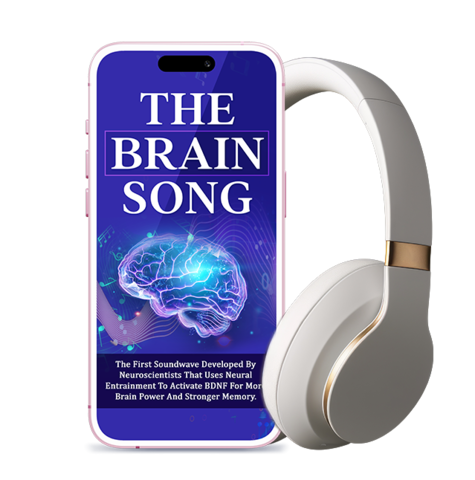
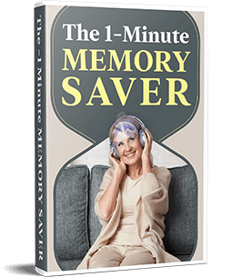
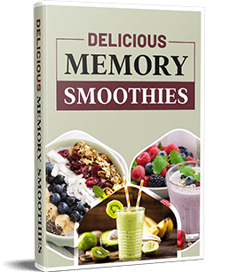
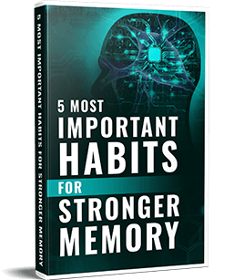

The Brain Song: 12-Minute Memory & Focus Boosting Program
The Brain Song is a 12-minute neuroscience-based soundwave program
that naturally enhances memory, focus, and mental clarity. By
activating Gamma brainwaves, it helps reduce brain fog and unlock
cognitive potential—all through the power of sound.
Using precise audio frequencies, it harmonizes brain activity to
improve learning, recall, and relaxation. Just 12 minutes a day
can help you experience sharper thinking and lasting mental
clarity.
What is The Brain Song?
The Brain Song is a 12-minute soundwave program
designed to enhance memory, focus, and clarity. By synchronizing
both hemispheres of the brain with targeted Gamma frequencies, it
reduces brain fog, improves mental performance, and promotes a calm,
alert state—without pills or stimulants.
Unlike traditional brain apps, it works directly on your brain’s
electrical activity. These scientifically tuned frequencies
stimulate Gamma waves, linked to heightened learning, creativity,
and memory retention in top performers and meditators.
In just 12 minutes a day, users often feel sharper, more focused,
and emotionally balanced—perfect for better work performance, faster
recall, or clearing mental fatigue naturally.

How Does The Brain Song Work?
The Brain Song uses precise sound frequencies that
align with your brain’s natural rhythms. These patterns stimulate Gamma
brainwaves, enhancing focus, memory, creativity, and mental clarity.
Listening “tunes” your brain to optimal frequencies for heightened
awareness and calm concentration.
Using neuro-acoustic technology, it balances the left and right
hemispheres, improves learning speed, reduces mental fatigue, and clears
brain fog—effortlessly, without medication. Just 12 minutes a day can
unlock your brain’s full potential.
The embedded Gamma waves promote neural entrainment, helping your brain
operate at peak efficiency. Memory, problem-solving, and focus improve
while stress and anxiety ease—like pressing a mental reset button.
Consistent use strengthens neural pathways for learning, attention, and
emotional stability. Users often report feeling sharper, more creative,
and deeply relaxed after each session, unlocking lasting cognitive and
emotional benefits.
The Science Behind The Brain Song
The Brain Song is grounded in neuroscience, using
brainwave entrainment and sound frequencies to optimize cognitive
function. By stimulating delta, theta, alpha, and beta waves, it
enhances relaxation, focus, creativity, and alertness. This auditory
stimulation strengthens neural connections, improving memory, learning,
and overall brain health.
It also activates BDNF (Brain-Derived Neurotrophic Factor), supporting
brain cell growth and repair. Neural regeneration and synaptic support
help maintain long-term brain health and resilience, boosting mental
clarity, problem-solving, and memory retention.
Beyond cognition, The Brain Song reduces stress hormones, promotes
relaxation, and balances brain chemistry. Regular use improves mood,
sleep quality, energy levels, and focus, demonstrating the profound
effect sound can have on mental and emotional wellness.
Neuroscience Meets The Brain Song
While researching memory improvement, I wanted a solution that was
simple, effective, and usable at home. Existing methods fell short, so
we experimented relentlessly with over 35,000 studies each year.
The breakthrough came with sound waves. MIT’s Brain Aging Initiative
research showed sound could activate the brain’s natural waste removal
system. Gamma waves, naturally present in the brain, are key to memory
and brain clearance—and certain sound waves can stimulate them safely
and immediately.
Don't Miss Out on Your Chance to Save on The Brain Song?
Claim Your Discounted The Brain Song Well While Stocks Last!
"I struggled with forgetfulness for years—missing appointments,
forgetting names, and misplacing things daily. Nothing worked until
I tried The Brain Song. Within days, my mind felt clearer, and weeks
later, my memory was sharper than ever! I’ve regained my
confidence."
“Mental Fog Gone”
"I suffered from brain fog for years, struggling to focus. After a
week of using The Brain Song, my mind felt clear and my focus
razor-sharp. I now accomplish more in hours than I used to in a
whole day—this program is a true game-changer!"
“From Struggling to Thriving!”
"As I aged, my memory and processing skills declined, making
conversations difficult. After a month of listening to The Brain
Song, my mind feels sharper, I think faster, and my memory is
stronger than ever. This program has truly changed my life!"
100% Satisfaction – 90-Day Money-Back Guarantee
Enjoy complete peace of mind with our 100% satisfaction promise.
If you’re not fully satisfied with The Brain Song within 90 days,
you’ll receive a full refund—no questions asked. Try it risk-free
and boost your memory and focus confidently.
We stand behind the effectiveness of The Brain Song. With our
90-day guarantee, you can explore the program fully, knowing your
investment is completely protected.
Key Benefits of Using The Brain Song
Users of The Brain Song report multiple cognitive and
mental health benefits. Through BDNF activation and neural
entrainment, the program supports overall brain health in several
ways:
✅ Boosts Brain Function: Stimulates gamma waves to
enhance memory, focus, and concentration while filtering
distractions.
✅ Protects the Brain: Supports BDNF activation,
neuroplasticity, and natural brain-healing processes to maintain
long-term cognitive health.
✅ Improves Mood: Reduces stress and anxiety,
promotes relaxation, and enhances sleep quality, leaving you more
energized and focused.
Don't Miss Out Purchase and Save Discount on The Brain Song?
Key Features of The Brain Song
Key Features of The Brain Song: This 12-minute daily
soundwave program is designed to enhance memory, focus, and cognitive
performance. It naturally activates gamma brainwaves, supports BDNF
production, boosts neuroplasticity, reduces stress, improves sleep,
and promotes overall brain health—safely and effectively.
12-Minute Daily Program: Quick, easy sessions that
fit your schedule while delivering maximum brain benefits.
Gamma Wave Activation: Stimulates gamma brainwaves to
improve memory, focus, and cognitive performance.
BDNF & Neuroplasticity Support: Promotes brain cell
growth and strengthens neural connections for long-term brain health.
Stress & Anxiety Reduction: Calms the mind and
supports emotional stability.
Improved Sleep & Energy: Helps regulate sleep,
leaving you refreshed and focused during the day.
Safe & Non-Invasive: 100% natural soundwave program
with no drugs or side effects, suitable for all adults.
Sign Up Today & Get 3 FREE Bonuses
BONUS #1
“1-Minute Memory Saver”
This simple, scientifically proven trick helps lock new information
into your long-term memory in just one minute. Use it anytime—at
home, in line, or anywhere you learn something new.


BONUS #2
“15 Delicious Memory Smoothies”
Learn 15 easy-to-make, brain-nourishing smoothies using common
grocery ingredients. These recipes are designed to support memory,
focus, and overall cognitive health.
BONUS #3
“5 Most Important Habits for Stronger Memory” Infographic
A visually engaging guide featuring 5 proven habits to maintain and
strengthen memory. Print and display it to keep these powerful
strategies top of mind daily.

The Brain Song – Pros & Cons
Pros:
✅ Enhances Cognitive Function: Improves memory, focus, and mental
clarity while reducing brain fog.
✅ Reduces Stress: Calms the mind and supports emotional well-being.
✅ Convenient & Non-Invasive: Only 12 minutes per day, easy to fit
into any schedule.
Cons:
⚠️ Inconsistent Results: Effects may vary between individuals.
⚠️ Limited Scientific Consensus: Some studies show mixed results on
brainwave entrainment.
⚠️ Not a Medical Treatment: Should not replace professional advice for
cognitive disorders.
How to Use The Brain Song
Put on your headphones, find a quiet space, and play the 12-minute
program. For best results, listen daily or whenever you want to boost
focus, memory, or mental clarity.
Tips: Listen at the same time each day in a relaxed environment. Pair
with healthy habits like sleep, hydration, and mental exercises to
maximize benefits.
Where to Buy The Brain Song
The Brain Song is available for a one-time payment of $39, providing
immediate digital access without subscriptions. Purchase includes the
audio program plus all bonus gifts.
Note: Other programs with similar names exist, but only this official
version offers the described cognitive benefits. Always buy from the
official website to ensure authenticity.
100% FREE Digital Delivery – No Shipping Required!
The Brain Song is a fully digital audio program—no physical
product or shipping costs. Get instant access and start boosting
your memory within minutes!
Upon purchase, your digital audio track will be delivered
instantly to your email. Start listening right away and enjoy
improved focus, memory, and mental clarity.
After clicking the “Buy Now” button, you will be taken to a secure
checkout page to enter your payment details. Once your purchase is
complete, The Brain Song digital audio track will be delivered to
your email instantly, allowing you to start listening and boosting
your memory immediately—no shipping required.
You’ll also receive all your free bonus gifts automatically,
including the 1-Minute Memory Saver, 15 Memory Smoothies Report, and
the 5 Most Important Habits Infographic. Everything is digital, so
you can access and start using them right away on any
device—computer, tablet, or smartphone.
Frequently Asked Questions Of The Brain Song
What is The Brain Song?
The Brain Song is a 12-minute digital audio program designed to
naturally boost memory, focus, and cognitive function using proven
brainwave entrainment techniques.
How long until I notice results?
Many users experience clearer focus and sharper memory after a few
sessions. For best results, listen daily for 2–3 weeks.
Are there any side effects?
The program is safe for most users. Some may feel relaxed or slightly
drowsy after listening. If you experience discomfort, stop and consult
a healthcare professional.
Do I get any bonuses?
Yes! Every purchase includes three FREE bonuses:
• 1-Minute Memory Saver: A quick trick to lock
new knowledge into long-term memory. •
15 Delicious Memory Smoothies: Simple smoothie
recipes to nourish your brain. •
5 Most Important Habits for Stronger Memory:
Infographic to boost memory naturally.
How do I access The Brain Song?
After purchase, your digital audio track and bonuses are sent
instantly to your email. Download and start listening immediately.
Is there a money-back guarantee?
Absolutely! The Brain Song comes with a 90-day 100% satisfaction
guarantee, so you can try it completely risk-free.
Don't Wait Any Longer! Order Discounted The Brain Song Now!